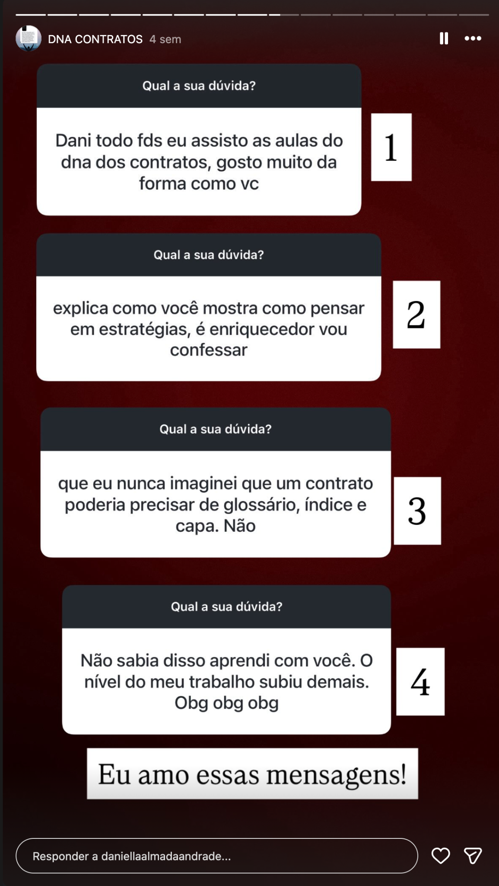

Aprenda a transformar contratos em uma área consultiva dentro do seu escritório, com serviços que você sabe executar, apresentar, precificar e cobrar.
Técnica contratual, prática, relacionamento com o cliente, precificação e construção comercial.
Um processo pode durar três, quatro, cinco anos. O cliente continua. As mensagens continuam. As dúvidas continuam. O trabalho continua.
Você trabalha muito, mas continua sem saber quanto o escritório vai faturar no próximo mês.
Clientes antigos continuam consumindo horas de atendimento sem gerar uma nova receita.
Você orienta, analisa documentos e resolve problemas sem transformar isso em serviço contratado.
Quando aparece um contrato, surge a dúvida: o que cobrar, o que perguntar, o que analisar e por onde começar?
Uma demanda chega. Você entende o problema, define a entrega, estabelece o prazo e apresenta os honorários.
Resultados enviados espontaneamente por alunos depois de aplicar o conteúdo.
“Só quero dizer que já tive o dobro de retorno do que investi no curso. É só o começo!”Mensagem de aluna do DNA
“Comecei a aplicar o que aprendi no meu trabalho. Meu chefe se impressionou comigo, tive um aumento e uma promoção.”Mensagem de aluna do DNA
“Seu curso me ajudou a me recolocar no mercado. Comecei com revisões contratuais e depois surgiu uma oportunidade na área.”Mensagem de aluna do DNA
Por isso a formação foi construída em três eixos que acompanham a realidade da atuação profissional.
Formação, vícios, evicção, extinção, responsabilidade civil, estrutura, cláusulas, análise e interpretação.
Operação, interesses das partes, distribuição de riscos, negociação e relação com o cliente.
Escopo, proposta, honorários, precificação, apresentação do serviço e marketing jurídico.
Menos dependência de modelos prontos e mais capacidade de decidir, justificar e cobrar pelo trabalho realizado.
O DNA foi organizado para desenvolver raciocínio contratual, compreensão prática e capacidade de transformar conhecimento em serviço.
Função, natureza e lógica das relações contratuais.
Formação da relação, efeitos e negócio jurídico.
Riscos relacionados ao objeto e responsabilidade das partes.
Resolução, rescisão, distrato e inadimplemento.
Responsabilidade, dano e alocação de riscos.
Cláusulas, estrutura e elementos que transformam raciocínio jurídico em documento funcional.
Atendimento, levantamento de informações e compreensão da operação.
Organização e apresentação do serviço contratual.
Critérios para calcular e apresentar honorários.
Modelos como repertório e instrumento de trabalho.
Análise de contratos variados, identificação de fragilidades e desenvolvimento do raciocínio de revisão.
Aplicação do raciocínio em contratos específicos.
Interpretação de cláusulas e comportamento das partes.
Comunicação e apresentação da atuação profissional ao mercado.
Provas sociais reais recebidas ao longo das turmas do DNA.

Você constrói a base técnica e aprende a lógica necessária para analisar e elaborar contratos.
Desenvolva autonomia para compreender riscos, estrutura e função das cláusulas.
Precificação, escopo, proposta e apresentação do serviço fazem parte da formação.
Organize contratos como uma frente consultiva dentro do escritório, sem depender exclusivamente do contencioso.
Daniella Almada é advogada contratualista e criou o DNA dos Contratos para organizar em uma formação o raciocínio utilizado na elaboração, revisão e análise de contratos.
Não. A formação atende quem está iniciando e também quem já trabalha com contratos e quer desenvolver mais autonomia.
Sim. O DNA possui modelos e materiais de apoio, além das aulas para ensinar análise, estrutura e adaptação.
Existe módulo específico de precificação, além de conteúdo sobre comercial e tratativas com o cliente.
Sim. Há módulo dedicado a análises contratuais, incluindo análise de contratos variados.
O acesso é de 24 meses.
A Hotmart disponibiliza as modalidades disponíveis no checkout, incluindo cartão e Pix.